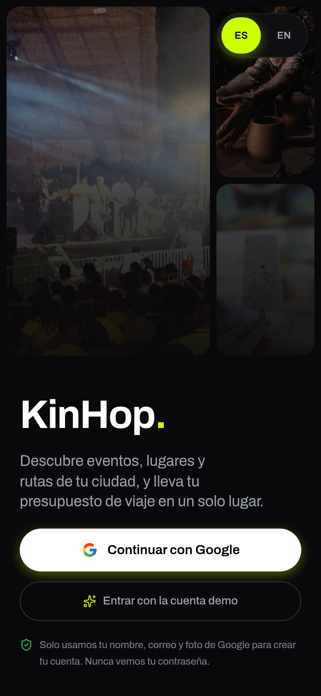
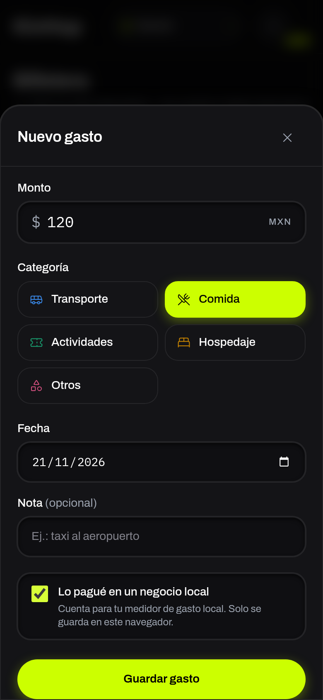
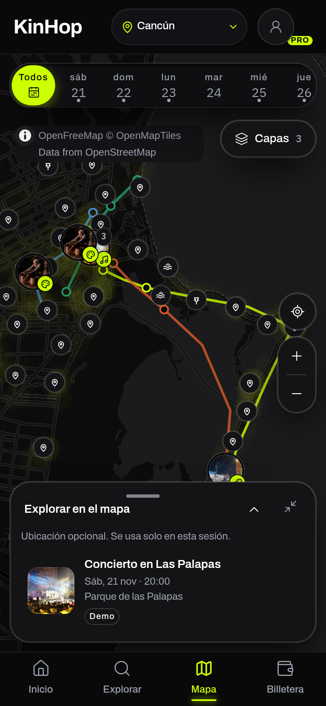
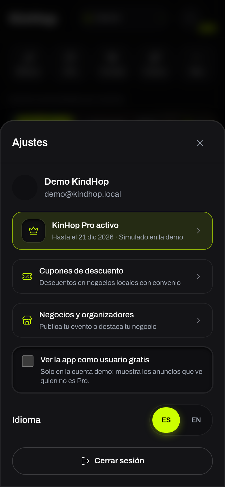
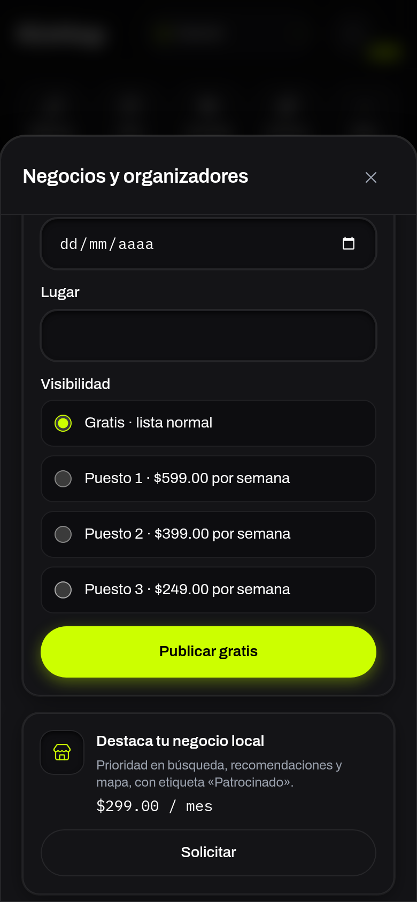
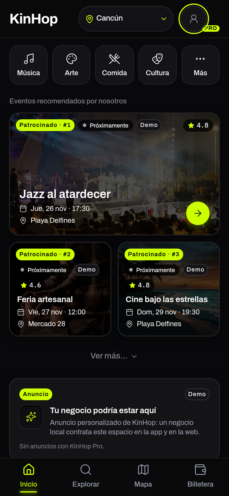

KinHop.
Lleva el gasto del turista a los negocios locales
Hack Maya 2026 · Turismo + Economía · Cancún y CDMX
El problema
0de 656 comercios para turistas en Cancún son de cadena
Cadenas (marca registrada en OpenStreetMap)Negocios sin marca de cadena
Oxxo · 64Starbucks · 18Chedraui · 11Soriana · 117-Eleven · 10McDonald's · 9
Las marcas conocidas son fáciles de encontrar.
KinHop pone también los negocios locales frente al turista.
KinHop pone también los negocios locales frente al turista.
Fuente: OpenStreetMap vía Overpass, consulta del 21/11/2026 en la caja urbana de Cancún.
01 · Acceso seguro
Entras con Google.
Tus datos, protegidos.
Tus datos, protegidos.
✓Google real: tu contraseña nunca pasa por KinHop
✓Sesión en el servidor con cookie firmada HttpOnly
✓API protegida: sin sesión no hay acceso a los datos
02 · Descubre la ciudad
Eventos y lugares
con fuente visible
con fuente visible
✓Cada dato dice si es REAL o DEMO: nunca se disfraza lo simulado
✓Los 3 primeros eventos son puestos pagados, siempre con «Patrocinado · #n»
✓Interfaz bilingüe ES / EN con motion design
03 · La innovación
De una cadena a una
alternativa local.
alternativa local.
Abres un Starbucks y KinHop te propone negocios locales a pocos pasos, con su «por qué».
Cadena detectada con la etiqueta brand de OpenStreetMap
Alternativas locales reales a 186–312 m
Por qué · fuente · confianza en cada sugerencia. Clasificación según OSM: confianza media.
04 · Mide el impacto
Tu gasto que se quedó
en la ciudad
en la ciudad
✓Presupuesto, gastos e historial en una sola vista
✓Marcas el gasto como negocio local y el medidor sube
✓Privado: vive en tu navegador, sin conectar tu banco
22%de lo gastado se quedó en negocios locales
05 · Escala
Dos ciudades,
un solo motor
un solo motor
✓Cancún: 774 lugares reales de OpenStreetMap. Rutas simuladas (DEMO) en este piloto
✓CDMX: Metrobús Línea 1 con el GTFS oficial (REAL)
✓Una ciudad nueva = un adaptador + una importación
06 · Modelo de negocio
Cinco fuentes de ingreso
1
Anuncios AdMob
Para usuarios del plan gratis
por impresión2
Eventos en el top 3
Puestos #1, #2 y #3
$599 · $399 · $249 /sem3
Negocio local destacado
Oferta aún por implementar
$299 /mes4
Anuncio personalizado
Banner propio en la app y la web
desde $1,500 /mes5
KinHop Pro · demo
Sin anuncios + cupones con QR
$59 /mesModelo propuesto · MXN. Sin cobros reales: Stripe y AdMob pendientes. Cupones y patrocinios DEMO.












07 · Hecho para durar
Datos abiertos.
Decisiones explicables.
Decisiones explicables.
0
lugares REAL de OpenStreetMap
Importación propia con licencia ODbL
API + web
pruebas automatizadas
Y validación de scripts de datos
Reglas
sin caja negra
Motor determinista con confianza por regla
2
ciudades con el mismo código
Adaptadores por ciudad
ES/EN
Interfaz bilingüe
Mismas funciones en ambos idiomas
PKCE
sesiones seguras en servidor
Límite de intentos por IP, CSRF por origen
El próximo descubrimiento.
Que sea local.
Que sea local.
KinHop.
Turismo y economía local en una sola decisión · Hack Maya 2026
El problema
Acceso seguro
Descubre
Gasto local
Billetera
Mapa · 2 ciudades
Modelo de negocio
Tecnología
KinHop.